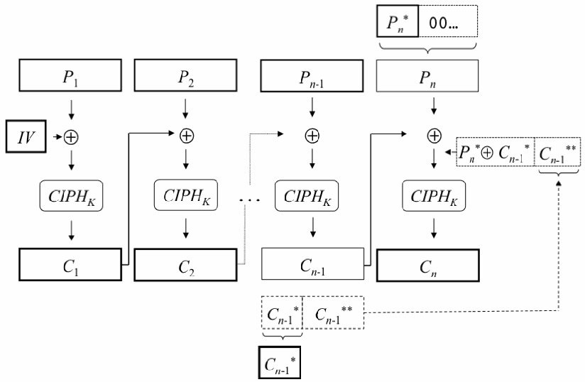

NIST Special Publication · PDF 原文抽出
Recommendation for Block Cipher Modes of Operation: Three Variants of Ciphertext Stealing for CBC Mode
ブロック暗号の運用モードに関する推奨事項：CBCモードの暗号文盗用3方式
NIST SP 800-38A Addendum（Recommendation for Block Cipher Modes of Operation: Three Variants of Ciphertext Stealing for CBC Mode）の英文と日本語訳を段落ごとに並べた閲覧用ページです。CBCモードでパディングによる暗号文の長さの増加を避ける、暗号文盗用（CBC-CS1、CBC-CS2、CBC-CS3）の3方式を規定します。 翻訳は非公式です。要件の確認にはNIST の正式版 PDFを参照してください。
PDF から抽出した原文は原本との照合待ちです。
PDF p.2: 抽出できる文字が少ないため OCR または画像の照合が必要
PDF p.8: 二段組の可能性があるため読み順を原本と照合してください
PDF p.10: 二段組の可能性があるため読み順を原本と照合してください
PDF p.11: 二段組の可能性があるため読み順を原本と照合してください
Recommendation for Block
ブロック暗号に関する勧告
未レビュー訳Addendum to NIST Special Publication 800-38A
NIST Special Publication 800-38Aへの補遺
未レビュー訳Cipher Modes of Operation:
暗号利用モード：
未レビュー訳October, 2010
2010年10月
未レビュー訳Three Variants of Ciphertext
CBCモード用の3種類の
未レビュー訳Stealing for CBC Mode
暗号文盗用方式
未レビュー訳Morris Dworkin
Morris Dworkin
未レビュー訳C O M P U T E R S E C U R I T Y
C O M P U T E R S E C U R I T Y（コンピューターセキュリティ）
未レビュー訳Recommendation for Block
ブロック暗号に関する勧告
未レビュー訳Addendum to NIST Special Publication 800-38A
NIST Special Publication 800-38Aへの補遺
未レビュー訳Cipher Modes of Operation: Three Variants of Ciphertext Stealing for CBC Mode
暗号利用モード：CBCモード用の3種類の暗号文盗用方式
未レビュー訳Morris Dworkin
Morris Dworkin
未レビュー訳C O M P U T E R S E C U R I T Y
C O M P U T E R S E C U R I T Y（コンピューターセキュリティ）
未レビュー訳Computer Security Division Information Technology Laboratory National Institute of Standards and Technology Gaithersburg, MD 20899-8930
コンピューターセキュリティ部門 情報技術研究所 米国国立標準技術研究所 メリーランド州ゲイサーズバーグ 20899-8930
未レビュー訳October 2010
2010年10月
未レビュー訳U.S. Department of Commerce Gary Locke, Secretary
米国商務省 Gary Locke 長官
未レビュー訳National Institute of Standards and Technology Patrick Gallagher, Director
米国国立標準技術研究所 Patrick Gallagher 所長
未レビュー訳Reports on Information Security Technology
情報セキュリティ技術に関する報告書
未レビュー訳The Information Technology Laboratory (ITL) at the National Institute of Standards and Technology (NIST) promotes the U.S. economy and public welfare by providing technical leadership for the Nation’s measurement and standards infrastructure. ITL develops tests, test methods, reference data, proof of concept implementations, and technical analyses to advance the development and productive use of information technology. ITL’s responsibilities include the development of technical, physical, administrative, and management standards and guidelines for the cost-effective security and privacy of sensitive unclassified information in Federal computer systems. This Special Publication 800-series reports on ITL’s research, guidance, and outreach efforts in computer security, and its collaborative activities with industry, government, and academic organizations.
国立標準技術研究所（NIST）の情報技術研究所（ITL）は、米国の計測および標準インフラストラクチャに対する技術的リーダーシップを提供することで、米国経済と公共の福祉を促進している。ITLは、情報技術の発展と生産的な利用を前進させるため、試験、試験方法、参照データ、概念実証実装、および技術分析を開発する。ITLの責務には、連邦コンピューターシステム内の機微な非機密情報の費用対効果の高いセキュリティとプライバシーを確保するため、技術、物理、管理、運用管理に関する標準およびガイドラインを策定することが含まれる。本Special Publication 800シリーズは、コンピューターセキュリティに関するITLの研究、指針、普及活動、および産業界、政府、学術機関との協力活動について報告する。
未レビュー訳Certain commercial entities, equipment, or materials may be identified in this document in order to describe an experimental procedure or concept adequately. Such identification is not intended to imply recommendation or endorsement by the National Institute of Standards and Technology, nor is it intended to imply that the entities, materials, or equipment are necessarily the best available for the purpose.
実験手順または概念を適切に説明する目的で、本書では特定の商業組織、装置、または材料を特定する場合がある（may）。このような特定は、国立標準技術研究所による推奨または是認を意味することを意図するものではなく、また、当該組織、材料、または装置が必ずしもその目的に最適であることを意味するものでもない。
未レビュー訳Addendum National Institute of Standards and Technology Special Publication 800-38A
補遺 国立標準技術研究所 Special Publication 800-38A
未レビュー訳11 pages (June 2010)
11ページ（2010年6月）
未レビュー訳CODEN: NSPUE2
CODEN: NSPUE2
未レビュー訳Table of Contents
目次
未レビュー訳1 INTRODUCTION — 1
1 はじめに — 1
未レビュー訳2 SPECIFICATION OF CBC-CS1 — 2
2 CBC-CS1の仕様 — 2
未レビュー訳3 SPECIFICATION OF CBC-CS2 — 4
3 CBC-CS2の仕様 — 4
未レビュー訳4 SPECIFICATION OF CBC-CS3 — 6
4 CBC-CS3の仕様 — 6
未レビュー訳REFERENCES — 7
参考文献 — 7
未レビュー訳List of Figures
図一覧
未レビュー訳Figure 1: CBC-CS1-Encrypt — 3
図1：CBC-CS1の暗号化 — 3
未レビュー訳Figure 2: CBC-CS1-Decrypt — 4
図2：CBC-CS1の復号 — 4
未レビュー訳1 Introduction
1 はじめに
未レビュー訳A limitation to Cipher Block Chaining (CBC) mode, as specified in NIST SP 800-38A, Ref. [1], is that the plaintext input must consist of a sequence of blocks. (In the rest of this publication, a block is called a “complete block” to emphasize the contrast with a “partial block” whose bit length is smaller than the block size.) Although Appendix A of Ref. [1] describes how padding methods can be used to meet this requirement, in such cases, the length of the resulting ciphertext expands over the length of the unpadded plaintext by the number of padding bits.
NIST SP 800-38A（参考文献[1]）に規定されているCipher Block Chaining（CBC）モードの制約の一つは、平文入力がブロックの列でなければならない（must）ことである。（本書の以降の部分では、「部分ブロック」との対比を明確にするため、ブロックサイズより短いビット長のブロックを「完全ブロック」と呼ぶ。）参考文献[1]の付録Aでは、この要件を満たすためにパディング方式を使用する方法を説明しているが、そのような場合、結果として得られる暗号文は、パディングされていない平文よりパディングビット数だけ長くなる。（can）
未レビュー訳This addendum to Ref. [1] specifies three variants of CBC mode that accept any plaintext input whose bit length is greater than or equal to the block size, whether or not the length is a multiple of the block size. Unlike the padding methods discussed in Ref. [1], these variants avoid ciphertext expansion.
参考文献[1]への本補遺は、ビット長がブロックサイズ以上であれば、長さがブロックサイズの倍数であるかどうかを問わず、任意の平文入力を受け入れるCBCモードの3種類の変形を規定する。参考文献[1]で説明されているパディング方式とは異なり、これらの変形では暗号文が拡張されない。
未レビュー訳These variants are denoted CBC-CS1, CBC-CS2, and CBC-CS3, where “CS” indicates “ciphertext stealing,” because when padding bits are needed in these variants, they are taken from the penultimate ciphertext block. The variants differ only in the ordering of the ciphertext bits. CBC-CS1 was specified as a suggestion on the NIST Computer Security Resource Center web site. CBC-CS2 is specified, for example, in Ref. [3]. CBC-CS3 is the variant specified for Kerberos 5 in Ref. [2].
これらの変形はCBC-CS1、CBC-CS2、CBC-CS3と表記する。「CS」は「ciphertext stealing（暗号文盗用）」を示す。これは、これらの変形でパディングビットが必要な場合、最後から2番目の暗号文ブロックからそのビットを取るためである。各変形の違いは、暗号文ビットの順序だけである。CBC-CS1は、NIST Computer Security Resource CenterのWebサイトで提案として規定された。CBC-CS2は、たとえば参考文献[3]で規定されている。CBC-CS3は、参考文献[2]でKerberos 5用に規定された変形である。（needed）
未レビュー訳Below are the specifications for encryption and decryption using CBC-CS1, CBC-CS2, and CBC-CS3, building on the specification of the CBC encryption and decryption in Ref. [1]. Diagrams are given for CBC-CS1 encryption and decryption. Each variant inherits the relevant requirements of Ref. [1], e.g., on the underlying block cipher, the key, and the initialization vector.
以下に、参考文献[1]におけるCBC暗号化および復号の仕様を基礎として、CBC-CS1、CBC-CS2、CBC-CS3を用いた暗号化と復号の仕様を示す。CBC-CS1の暗号化と復号については図を示す。各変形には、基礎となるブロック暗号、鍵、初期化ベクトルなど、参考文献[1]の関連要件が適用される。
未レビュー訳The following notational conventions apply to the specifications below:
以下の仕様には、次の表記規則を適用する。
未レビュー訳•Bit strings are denoted with upper case letters; integers with lower case letters.
•ビット列は大文字で、整数は小文字で表す。
未レビュー訳•The block size of the underlying block cipher is denoted b.
•基礎となるブロック暗号のブロックサイズを b と表す。
未レビュー訳•For a bit string X, the bit length of X is denoted len(X).
•ビット列 X のビット長を len(X) と表す。
未レビュー訳•For a bit string X and a positive integer r that does not exceed len(X), the string consisting of the leftmost r bits of X is denoted MSB (X), and the string consisting r of the rightmost r bits of X is denoted LSB (X). r
•ビット列 X と、len(X) を超えない（does not）正の整数 r に対し、X の左端 r ビットから成る文字列を MSB_r(X) と表し、X の右端 r ビットから成る文字列を LSB_r(X) と表す。
未レビュー訳•For an input block B and key K, the output block of the cipher function (“encryption”) is denoted CIPH (B), and the output block of the inverse cipher K function (“decryption”) is denoted CIPH-1 (B). K
•入力ブロック B と鍵 K に対し、暗号関数（「暗号化」）の出力ブロックを CIPH_K(B) と表し、逆暗号関数（「復号」）の出力ブロックを CIPH_K^{-1}(B) と表す。
未レビュー訳In principle, the input strings to encryption and decryption for each of the variants may be any string whose length is not less than b bits, but typically an implementation is designed to accept a restricted set of lengths. For example, the set of lengths may be restricted to multiples of 8, so that the input strings may be represented with bytes/octets. The input lengths that an implementation allows are called the valid lengths.
原理上、各変形における暗号化および復号への入力文字列は、長さが b ビット以上であれば任意の文字列でよい（may）。ただし通常、実装は長さの集合を制限して受け入れるよう設計される。たとえば、許容する長さが8の倍数に制限される（may）ため、入力文字列をバイト／オクテットで表現できる（may）。実装が許容する入力長を有効長と呼ぶ。
未レビュー訳2 Specification of CBC-CS1
2 CBC-CS1の仕様
未レビュー訳Algorithm: CBC-CS1-Encrypt
アルゴリズム：CBC-CS1-Encrypt
未レビュー訳Input:
入力：
未レビュー訳plaintext P, such that len(P) is valid; initialization vector IV; key K.
平文 P（len(P) が有効長であるもの）；初期化ベクトル IV；鍵 K。
未レビュー訳Output: ciphertext C, such that len(C)=len(P).
出力：暗号文 C（len(C)=len(P) を満たすもの）。
未レビュー訳Steps:
手順：
未レビュー訳1.Let n be the smallest integer such that n⋅b≥len(P), let d=len(P)-(n-1)⋅b, and let P , 1 P , … , P , P * be the unique sequence of bit strings such that: 2 n-1 n a) P = P ||P ||…||P ||P *; and 1 2 n-1 n b) P , P , … and P are complete blocks. 1 2 n-1 Consequently, len(P *)=d, and 1≤d≤b, so that P * is either a complete block or a n n nonempty partial block.
1.n を n⋅b≥len(P) を満たす最小の整数とし、d=len(P)-(n-1)⋅b とする。また、次の条件を満たすビット列の一意な列 P_1, P_2, …, P_{n-1}, P_n^* を定める。a) P=P_1||P_2||…||P_{n-1}||P_n^*。b) P_1, P_2, …, P_{n-1} は完全ブロックである。したがって、len(P_n^*)=d であり、1≤d≤b となるため、P_n^* は完全ブロックまたは空でない部分ブロックである。
未レビュー訳2.Let PAD be the bit string consisting of b-d ‘0’ bits, and let P = P *||PAD. Note n n that if P * is a complete block, then PAD is the empty string, and P = P *. n n n
2.PAD を b-d 個の「0」ビットから成るビット列とする。また、P_n=P_n^*||PAD とする。P_n^* が完全ブロックの場合、PAD は空文字列となり、P_n=P_n^* であることに注意する。
未レビュー訳3.Apply CBC encryption to the plaintext (P , P , … P , P ) with initialization 1 2 n-1 n vector IV and key K to produce (C , C , … C , C ). 1 2 n-1 n
3.初期化ベクトル IV と鍵 K を用いて平文 (P_1, P_2, …, P_{n-1}, P_n) にCBC暗号化を適用し、(C_1, C_2, …, C_{n-1}, C_n) を生成する。
未レビュー訳4.Let C * = MSB (C ). n-1 d n-1
4.C_{n-1}^*=MSB_d(C_{n-1}) とする。
未レビュー訳5.Return C ||C ||…||C ||C *||C . 1 2 n-2 n-1 n
5.C_1||C_2||…||C_{n-2}||C_{n-1}^*||C_n を返す。
未レビュー訳When P * is a complete block, CBC-CS1-Encrypt is equivalent to CBC encryption.
P_n^* が完全ブロックの場合、CBC-CS1-Encrypt はCBC暗号化と等価である。
未レビュー訳n
未レビュー訳Diagram: Figure 1 below illustrates the CBC-CS1-Encrypt algorithm for the case that P * is a partial block, i.e., d<b. The bolded rectangles contain the inputs and outputs. n The dotted rectangles provide alternate representations of two blocks in order to illustrate the role of the “stolen” ciphertext.
図：図1は、P_n^* が部分ブロック、すなわち d<b である場合のCBC-CS1-Encryptアルゴリズムを示す。太字の長方形は入力と出力を示す。点線の長方形は、2つのブロックの別表現を示し、「盗用」された暗号文の役割を説明する。
未レビュー訳In particular, the string of the b-d rightmost bits of C , denoted C **, becomes the
特に、C_{n-1} の右端 b-d ビットから成る文字列を C_{n-1}^{**} と表す。これは
未レビュー訳n-1
n-1
未レビュー訳n-1
n-1
未レビュー訳padding for the input block to the final invocation of the block cipher within the execution of CBC mode. The ciphertext that is returned in Step 5 above omits C **,
CBCモードの実行において、ブロック暗号を最後に呼び出す際の入力ブロックに対するパディングとなる。上記ステップ5で返される暗号文では C_{n-1}^{**} を省略する。
未レビュー訳n-1
n-1
未レビュー訳because it can be recovered from C during decryption.
これは、復号時に C_n から復元できる（can）ためである。
未レビュー訳n
未レビュー訳
Figure 1: CBC-CS1-Encrypt
図1：CBC-CS1-Encrypt
未レビュー訳Algorithm: CBC-CS1-Decrypt
アルゴリズム：CBC-CS1-Decrypt
未レビュー訳Input:
入力：
未レビュー訳ciphertext C, such that len(C) is valid; initialization vector IV; key K.
暗号文 C（len(C) が有効長であるもの）；初期化ベクトル IV；鍵 K。
未レビュー訳Output: plaintext P, such that len(P) = len(C).
出力：平文 P（len(P)=len(C) を満たすもの）。
未レビュー訳Steps:
手順：
未レビュー訳1.Let n be the smallest integer such that n⋅b≥len(C), let d=len(C)-(n-1)⋅b, and let C , 1 C , … , C , C *, C be the unique sequence of bit strings such that
1.n を n⋅b≥len(C) を満たす最小の整数とし、d=len(C)-(n-1)⋅b とする。また、次の条件を満たすビット列の一意な列 C_1, C_2, …, C_{n-2}, C_{n-1}^*, C_n を定める。
未レビュー訳5.Let P *=C * Z*. n n-1
5.P_n^*=C_{n-1}^*⊕Z^* とする。
未レビュー訳6.Return P ||P ||…||P ||P *. 1 2 n-1 n
6.P_1||P_2||…||P_{n-1}||P_n^* を返す。
未レビュー訳When C * is a complete block, CBC-CS1-Decrypt is equivalent to CBC decryption.
C_{n-1}^* が完全ブロックの場合、CBC-CS1-Decrypt はCBC復号と等価である。
未レビュー訳n-1
n-1
未レビュー訳Diagram:
図：
未レビュー訳Figure 2 below illustrates the CBC-CS1-Decrypt algorithm for the case that C * is a
図2は、C_{n-1}^* が部分ブロック、すなわち
未レビュー訳n-1
n-1
未レビュー訳partial block, i.e., d<b. As in the previous diagram, the bolded rectangles contain the inputs and outputs.
d<b の場合のCBC-CS1-Decryptアルゴリズムを示す。前の図と同様に、太字の長方形は入力と出力を示す。
未レビュー訳C * Z** n-1
C_{n-1}^* Z^{**}
未レビュー訳C
未レビュー訳C
未レビュー訳C
未レビュー訳C
未レビュー訳2
未レビュー訳n
未レビュー訳1
未レビュー訳n-1
n-1
未レビュー訳CIPH-1
CIPH^{-1}
未レビュー訳CIPH-1
CIPH^{-1}
未レビュー訳CIPH-1
CIPH^{-1}
未レビュー訳CIPH-1
CIPH^{-1}
未レビュー訳K …
K …
未レビュー訳K
未レビュー訳K
未レビュー訳K
未レビュー訳| Z* | Z** |
⊕
未レビュー訳⊕
未レビュー訳⊕
未レビュー訳IV
IV
未レビュー訳⊕
未レビュー訳P
未レビュー訳P
未レビュー訳P
未レビュー訳n-1
n-1
未レビュー訳1
未レビュー訳2
未レビュー訳P *
P^*
未レビュー訳n
未レビュー訳Figure 2: CBC-CS1-Decrypt
図2：CBC-CS1-Decrypt
未レビュー訳3 Specification of CBC-CS2
3 CBC-CS2の仕様
未レビュー訳Algorithm: CBC-CS2-Encrypt
アルゴリズム：CBC-CS2-Encrypt
未レビュー訳Input:
入力：
未レビュー訳plaintext P, such that len(P) is valid; initialization vector IV; key K.
平文 P（len(P) が有効長であるもの）；初期化ベクトル IV；鍵 K。
未レビュー訳Output: ciphertext C, such that len(C) = len(P).
出力：暗号文 C（len(C)=len(P) を満たすもの）。
未レビュー訳Steps:
手順：
未レビュー訳1.Let n be the smallest integer such that n⋅b≥len(P), let d=len(P)-(n-1)⋅b, and let P , 1 P , … , P , P * be the unique sequence of bit strings such that: 2 n-1 n a) P=P ||P ||…||P ||P *; and 1 2 n-1 n b) P , P , … and P are complete blocks. 1 2 n-1 Consequently, len(P *)=d, and 1≤d≤b, so that P * is either a complete block or a n n nonempty partial block.
1.n を n⋅b≥len(P) を満たす最小の整数とし、d=len(P)-(n-1)⋅b とする。また、次の条件を満たすビット列の一意な列 P_1, P_2, …, P_{n-1}, P_n^* を定める。a) P=P_1||P_2||…||P_{n-1}||P_n^*。b) P_1, P_2, …, P_{n-1} は完全ブロックである。したがって、len(P_n^*)=d であり、1≤d≤b となるため、P_n^* は完全ブロックまたは空でない部分ブロックである。
未レビュー訳2.Apply CBC-CS1-Encrypt to the plaintext P with initialization vector IV and key K to produce C ||C ||…||C ||C *||C . 1 2 n-2 n-1 n
2.初期化ベクトル IV と鍵 K を用いて、平文 P にCBC-CS1-Encryptを適用し、C_1||C_2||…||C_{n-2}||C_{n-1}^*||C_n を生成する。
未レビュー訳3.If d=b, return C ||C ||…||C ||C *||C ; if d<b, return C ||C ||…||C ||C ||C *. 1 2 n-2 n-1 n 1 2 n-2 n n-1
3.d=b の場合、C_1||C_2||…||C_{n-2}||C_{n-1}^*||C_n を返す。d<b の場合、C_1||C_2||…||C_{n-2}||C_n||C_{n-1}^* を返す。
未レビュー訳When P * is a complete block, then CBC-CS2-Encrypt, like CBC-CS1-Encrypt, is
P_n^* が完全ブロックの場合、CBC-CS2-EncryptはCBC-CS1-Encryptと同様にCBC暗号化と
未レビュー訳n
未レビュー訳equivalent to CBC encryption. When P * is a partial block, then CBC-CS2-Encrypt and n CBC-CS1-Encrypt differ only in the ordering of C * and C .
等価である。P_n^* が部分ブロックの場合、CBC-CS2-EncryptとCBC-CS1-Encryptは、C_{n-1}^* と C_n の順序だけが異なる。
未レビュー訳n-1 n
n-1 n
未レビュー訳Algorithm: CBC-CS2-Decrypt
アルゴリズム：CBC-CS2-Decrypt
未レビュー訳Input:
入力：
未レビュー訳ciphertext C, such that len(C) is valid; initialization vector IV; key K.
暗号文 C（len(C) が有効長であるもの）；初期化ベクトル IV；鍵 K。
未レビュー訳Output: plaintext P, such that len(P)=len(C).
出力：平文 P（len(P)=len(C) を満たすもの）。
未レビュー訳Steps:
手順：
未レビュー訳1.Let n be the smallest integer such that n⋅b≥len(C), let d=len(C)-(n-1)⋅b, and let C , 1 C , … , C , C , C * be the unique sequence of bit strings such that 2 n-2 n-1 n a) C=C ||C ||…||C ||C ||C *; 1 2 n-2 n-1 n b) C is a complete block; and n-1 c) If n>2, then C …,C , are complete blocks. 1, n-2 Consequently, len(C *)=d, and 1 ≤ d ≤ b, so that C * is either a complete block or n n a nonempty partial block.
1.n を n⋅b≥len(C) を満たす最小の整数とし、d=len(C)-(n-1)⋅b とする。また、次の条件を満たすビット列の一意な列 C_1, C_2, …, C_{n-2}, C_{n-1}, C_n^* を定める。a) C=C_1||C_2||…||C_{n-2}||C_{n-1}||C_n^*。b) C_{n-1} は完全ブロックである。c) n>2 の場合、C_1,…,C_{n-2} は完全ブロックである。したがって、len(C_n^*)=d であり、1≤d≤b となるため、C_n^* は完全ブロックまたは空でない部分ブロックである。
未レビュー訳2.If d=b, i.e., C * is a complete block, then apply CBC-CS1-Decrypt to C with n initialization vector IV and key K, and return the result, P. STOP.
2.d=b、すなわち C_n^* が完全ブロックの場合、初期化ベクトル IV と鍵 K を用いて C にCBC-CS1-Decryptを適用し、その結果 P を返す。終了（STOP）。
未レビュー訳3.If d<b, i.e., C * is a partial block, then let C′= C ||C ||…||C ||C *||C .
3.d<b、すなわち C_n^* が部分ブロックの場合、C′=C_1||C_2||…||C_{n-2}||C_n^*||C_{n-1} とする。
未レビュー訳4 Specification of CBC-CS3
4 CBC-CS3の仕様
未レビュー訳Algorithm: CBC-CS3-Encrypt
アルゴリズム：CBC-CS3-Encrypt
未レビュー訳Input:
入力：
未レビュー訳plaintext P, such that len(P) is valid; initialization vector IV; key K.
平文 P（len(P) が有効長であるもの）；初期化ベクトル IV；鍵 K。
未レビュー訳Output: ciphertext C, such that len(C)=len(P).
出力：暗号文 C（len(C)=len(P) を満たすもの）。
未レビュー訳Steps:
手順：
未レビュー訳1.Apply CBC-CS1-Encrypt to the plaintext P with initialization vector IV and key K to produce C ||C ||…||C ||C *||C . 1 2 n-2 n-1 n
1.初期化ベクトル IV と鍵 K を用いて、平文 P にCBC-CS1-Encryptを適用し、C_1||C_2||…||C_{n-2}||C_{n-1}^*||C_n を生成する。
未レビュー訳2.Return C ||C ||…||C ||C ||C *. 1 2 n-2 n n-1
2.C_1||C_2||…||C_{n-2}||C_n||C_{n-1}^* を返す。
未レビュー訳Note that in Step 2, C * and C are unconditionally swapped, i.e., even when C * is a
ステップ2では、C_{n-1}^* と C_n を無条件に入れ替える。すなわち、C_{n-1}^* が
未レビュー訳n-1 n
n-1 n
未レビュー訳n-1
n-1
未レビュー訳complete block; therefore, CBC-CS3 is not strictly an extension of CBC mode. In the other case, i.e., when C * is a nonempty partial block, CBC-CS3-Encrypt is equivalent
完全ブロックである場合も同様である。したがって、CBC-CS3はCBCモードの厳密な拡張ではない。もう一方の場合、すなわち C_{n-1}^* が空でない部分ブロックの場合、CBC-CS3-Encryptは
未レビュー訳n-1
n-1
未レビュー訳to CBC-CS2-Encrypt.
CBC-CS2-Encryptと等価である。
未レビュー訳Algorithm: CBC-CS3-Decrypt
アルゴリズム：CBC-CS3-Decrypt
未レビュー訳Input:
入力：
未レビュー訳ciphertext C, such that len(C) is valid; initialization vector IV; key K.
暗号文 C（len(C) が有効長であるもの）；初期化ベクトル IV；鍵 K。
未レビュー訳Output: plaintext P, such that len(P)=len(C).
出力：平文 P（len(P)=len(C) を満たすもの）。
未レビュー訳Steps:
手順：
未レビュー訳1.Let n be the smallest integer such that n⋅b≥len(C), let d=len(C)-(n-1)⋅b, and let C , 1 C , … , C , C , C * be the unique sequence of bit strings such that
1.n を n⋅b≥len(C) を満たす最小の整数とし、d=len(C)-(n-1)⋅b とする。また、次の条件を満たすビット列の一意な列 C_1, C_2, …, C_{n-2}, C_{n-1}, C_n^* を定める。
未レビュー訳References
参考文献
未レビュー訳[1] Dworkin, M., NIST Special Publication 800-38A, 2001 Edition: Recommendation for Block Cipher Modes of Operation, Methods and Techniques, December 2001, Natl. Inst. Stand. Technol. [Web page], http://www.csrc.nist.gov/publications/
[1] Dworkin, M., NIST Special Publication 800-38A, 2001 Edition: Recommendation for Block Cipher Modes of Operation, Methods and Techniques, 2001年12月, Natl. Inst. Stand. Technol. [Webページ], http://www.csrc.nist.gov/publications/
未レビュー訳nistpubs/800-38a/sp800-38a.pdf.
nistpubs/800-38a/sp800-38a.pdf.
未レビュー訳[2] Raeburn, K., Request for Comments 3962: Advanced Encryption Standard (AES) Encryption for Kerberos 5, Internet Engineering Task Force, February 2005.
[2] Raeburn, K., Request for Comments 3962: Advanced Encryption Standard (AES) Encryption for Kerberos 5, Internet Engineering Task Force, 2005年2月。
未レビュー訳[3] Schneier, B., Applied Cryptography, Second Edition: protocols, algorithms, and
[3] Schneier, B., Applied Cryptography, Second Edition: protocols, algorithms, and
未レビュー訳source code in C. New York: Wiley, 1996.
source code in C. New York: Wiley, 1996.
未レビュー訳